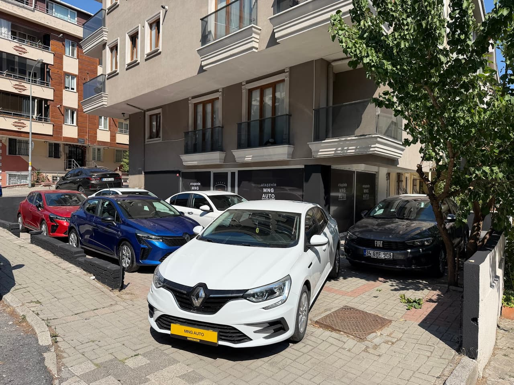
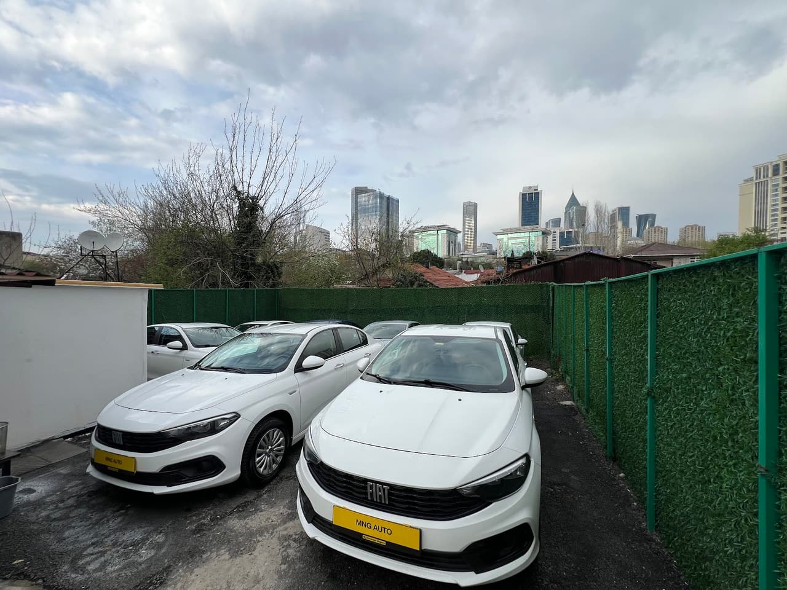
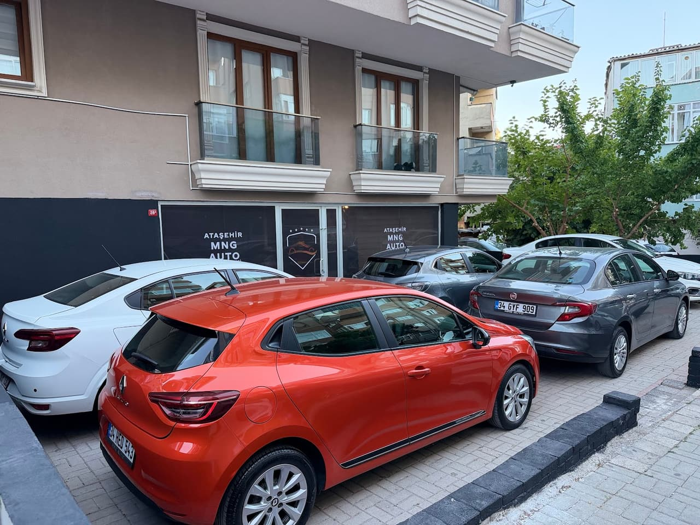

MNG AUTO
Google'daki fotoğraflarınızdan




Ataşehir Mng Auto Otomobilcilik, Esatpaşa'da müşterilerine açık ve sade bir araç alım süreci sunar. İlk aracını alanlar da yıllardır araç alıp satanlar da ihtiyaçlarını konuşarak çözmeye çalışan bir ekiple karşılaşır.



Galerilere ön yargılı gelen müşteriler bile samimi ve dürüst tavır sayesinde gönül rahatlığıyla araç sahibi oldu.
Alper, Burak ve Hakan Bey müşterilerin yorumlarında ilgileri ve tecrübeleriyle anılıyor.
Satın alınan araçlar ekspertiz sonucunda anlatıldığı gibi çıktı. Sağlam ve güvenli bir alışveriş yaşandı.
İlk arabasını alanlar her konuda yardım gördüklerini, güler yüzlü bir ortamda ilerlediklerini anlatıyor.
📍 Esatpaşa, Yağmur Sokak no: 28A, 34704 Ataşehir/İstanbul
🕑 Pzt–Cmt 09:00–18:30 · Paz kapalı